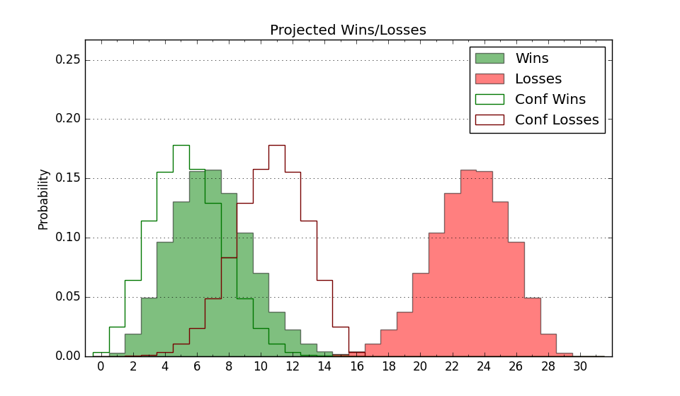

| Home | Game Probabilities | Conferences | Preseason Predictions | Odds Charts | NCAA Tournament |
| City: | Easton, Massachusetts | |
| Conference: | Northeast (6th)
| |
| Record: | 7-9 (Conf) 13-17 (Overall) | |
| Ratings: | Comp.: -15.7 (318th) Net: -15.7 (318th) Off: 99.6 (287th) Def: 115.4 (323rd) SoR: 0.0 (112th) |
| Remaining | ||||||
|---|---|---|---|---|---|---|
| Date | Opponent | Win Prob | Pred. | |||
| Previous | Game Score | |||||
| Date | Opponent | Win Prob | Result | Off | Def | Net |
| 11/6 | @Notre Dame (92) | 4.5% | L 60-89 | -5.5 | -4.8 | -10.3 |
| 11/9 | @Providence (91) | 4.4% | L 49-76 | -23.9 | 18.3 | -5.6 |
| 11/14 | @Robert Morris (146) | 9.0% | L 51-63 | -17.6 | 23.2 | 5.6 |
| 11/15 | (N) New Orleans (335) | 56.6% | W 80-54 | 3.5 | 38.0 | 41.5 |
| 11/17 | (N) Lindenwood (310) | 46.9% | L 74-75 | 6.5 | -5.0 | 1.5 |
| 11/21 | Bryant (141) | 24.5% | W 67-66 | -4.9 | 16.4 | 11.5 |
| 11/25 | Texas A&M Commerce (330) | 67.4% | W 67-65 | 1.2 | -6.0 | -4.8 |
| 11/27 | @Marquette (29) | 1.1% | L 59-94 | 1.9 | -11.0 | -9.1 |
| 12/1 | Quinnipiac (222) | 39.7% | W 88-74 | 30.2 | -6.2 | 24.0 |
| 12/15 | @Boston College (193) | 13.2% | L 69-73 | 13.2 | -4.4 | 8.8 |
| 12/18 | @UMass Lowell (258) | 21.3% | L 67-78 | -5.5 | 2.0 | -3.5 |
| 12/22 | New Hampshire (356) | 82.8% | W 90-83 | 19.8 | -25.0 | -5.2 |
| 12/29 | @Lafayette (276) | 25.4% | W 70-65 | 3.1 | 12.8 | 15.8 |
| 1/3 | @Mercyhurst (341) | 42.9% | L 69-76 | -4.0 | -0.3 | -4.3 |
| 1/5 | @St. Francis PA (312) | 33.2% | W 64-60 | -2.5 | 15.4 | 12.9 |
| 1/10 | LIU Brooklyn (290) | 56.9% | L 60-70 | -7.6 | -13.4 | -21.0 |
| 1/12 | @Chicago St. (359) | 63.1% | W 68-52 | 5.5 | 18.2 | 23.7 |
| 1/20 | @Le Moyne (352) | 50.8% | L 72-73 | -2.3 | 1.8 | -0.5 |
| 1/24 | Chicago St. (359) | 85.4% | W 75-73 | 2.2 | -16.2 | -14.1 |
| 1/26 | Fairleigh Dickinson (305) | 60.5% | L 54-65 | -22.6 | -3.0 | -25.6 |
| 1/30 | Wagner (344) | 73.3% | W 73-61 | 20.0 | -3.8 | 16.3 |
| 2/1 | Central Connecticut (173) | 30.7% | L 63-71 | -10.4 | 7.8 | -2.6 |
| 2/8 | @LIU Brooklyn (290) | 27.9% | L 59-62 | 2.6 | 2.9 | 5.5 |
| 2/13 | St. Francis PA (312) | 62.9% | W 79-74 | 12.2 | -14.2 | -2.0 |
| 2/15 | Mercyhurst (341) | 71.9% | W 85-73 | 26.3 | -12.1 | 14.2 |
| 2/20 | @Wagner (344) | 44.7% | L 57-63 | -3.3 | -5.8 | -9.1 |
| 2/22 | @Central Connecticut (173) | 11.5% | L 41-67 | -27.4 | 9.7 | -17.7 |
| 2/27 | @Fairleigh Dickinson (305) | 31.0% | L 69-82 | -5.4 | -4.3 | -9.7 |
| 3/1 | Le Moyne (352) | 77.9% | W 85-79 | 17.2 | -15.9 | 1.3 |
| 3/5 | (N) Fairleigh Dickinson (305) | 45.3% | L 56-71 | -19.3 | -4.6 | -23.9 |
| Stats & Trends | |||||
|---|---|---|---|---|---|
| Current | Day | Week | Month | Season | |
| Composite | -15.7 | -0.1 | -0.1 | -2.2 | +1.5 |
| Comp Rank | 318 | -- | +1 | -17 | +23 |
| Net Efficiency | -15.7 | -0.1 | -0.1 | -2.3 | -- |
| Net Rank | 318 | -- | +1 | -17 | -- |
| Off Efficiency | 99.6 | -0.1 | -0.1 | -0.0 | -- |
| Off Rank | 287 | -1 | -1 | -11 | -- |
| Def Efficiency | 115.4 | -0.0 | +0.0 | -2.2 | -- |
| Def Rank | 323 | +1 | +2 | -27 | -- |
| SoS Rank | 356 | -- | -1 | -2 | -- |
| Exp. Wins | 13.0 | -- | -- | -0.3 | +1.8 |
| Exp. Conf Wins | 7.0 | -- | -- | -0.3 | -0.5 |
| Conf Champ Prob | 0.0 | -- | -- | -- | -9.0 |

| Advanced Stats | ||
|---|---|---|
| Stat | Value | Rank |
| Off Eff FG % | 0.493 | 227 |
| Off Ast Ratio | 0.153 | 132 |
| Off ORB% | 0.230 | 322 |
| Off TO Rate | 0.163 | 289 |
| Off FT Ratio | 0.294 | 285 |
| Def Eff FG % | 0.537 | 279 |
| Def Ast Ratio | 0.129 | 61 |
| Def ORB% | 0.316 | 287 |
| Def TO Rate | 0.126 | 321 |
| Def FT Ratio | 0.371 | 277 |